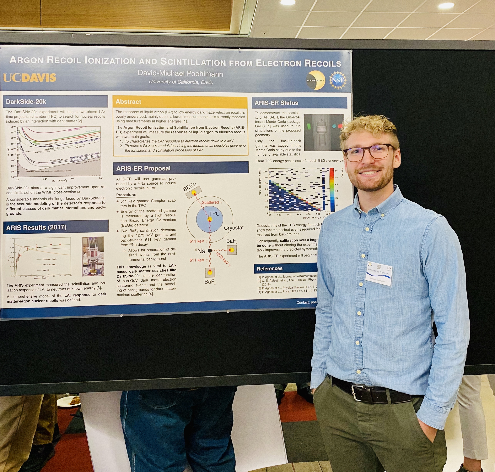

<!-- Research -->
<section class="page-section" id="research">
  <div class="container-fluid">

    <h2 class="section-heading text-center">Research</h2>

    <h3 class="section-subheading text-center">
      My quest for the detection of rare events.
    </h3>

    <div class="row mx-auto flex-nowrap">
      <div class="col-md-4 border-img">
        
        <div class="img-caption text-left">
          Here, I am shown presenting a poster on ARIS-ER.
        </div>
      </div>

      <div class="col-8 p-4 m-0 section-bg-secondary-light">

        <h4 class="body-heading">
          DarkSide
        </h4>
        <p>
          The
          <a href="http://darkside.lngs.infn.it" onclick="gtag('event', 'click', {'event_category':'external', 'event_label':'http://darkside.lngs.infn.it'});">DarkSide Program</a>
          aims at the direct detection of dark matter using
          <!-- <a class="subpage-link" data-toggle="modal" href="#twophasetpc">two-phase argon time projection chambers (TPCs)</a>. -->
          two-phase argon time projection chambers (TPCs).
          The upcoming phase of the DarkSide Program is DarkSide-20k, a next-generation dark matter detector at the Laboratori Nazionali del Gran Sasso in Italy.
          <!-- To give an idea of the experiment's scope, DarkSide-20k will only need to see 5 dark matter-like events over 10 years of data collection to credibly claim discovery at five standard deviations.
          These five events -->
        </p>
        <p>
          As a member of the DarkSide Collaboration, I run simulations to inform the design of DarkSide-20k, with a focus on backgrounds and optical modeling.
          I also contribute to the analysis of data collected by DarkSide-50.
        </p>
        <br>

        <h4 class="body-heading">
          ARIS-ER
        </h4>
        <p>
          One of the most significant analysis limitations faced by DarkSide-20k is the accurate modeling of the detector's response to different classes of dark matter interactions.
          In 2017, the
          <a href="https://arxiv.org/abs/1801.06653" onclick="gtag('event', 'click', {'event_category':'external', 'event_label':'https://arxiv.org/abs/1801.06653'});">ARIS experiment</a>
          measured the scintillation and ionization response of LAr to impinging neutrons of known energy.
          In a continuing effort to study the response of liquid argon at low energies, the proposed Argon Recoil Ionization and Scintillation from Electron Recoils (ARIS-ER) experiment will measure the response of liquid argon to monoenergetic gammas which Compton scatter in the detector.
                    ARIS-ER will take place at UC Davis and begin taking data in 2021.
        </p>
        <p>
          For ARIS-ER, I am involved in the experimental design, data acquisition (DAQ) system development, hardware development, and detector commissioning.
          Once data is taken, I will also be involved in the ARIS-ER analysis.
        </p>

      </div>
    </div>


    {% comment %}
    <!-- Research Grid -->
    <div class="row justify-content-around" style="margin-top:20px;">
    {% for sp in site.data.sitetext.subpages %}
    {% if sp.section != "research" %}
    {% continue %}
    {% endif %}

    <div class="col-md-4 col-sm-6 subpage-item">
    <a class="subpage-link" data-toggle="modal" href="#{{ sp.subsection }}">
    <div class="subpage-hover">
    <div class="subpage-hover-content">
    <i class="{{ site.data.style.subpage-icon | default: "fas fa-plus fa-3x" }}"></i>
    </div>
    </div>
    
    </a>
    <div class="subpage-caption">
    <h4>{{ sp.title }}</h4>
    <p class="text-muted">{{ sp.subtitle }}</p>
    </div>
    </div>
    {% endfor %}
    </div>
    <!-- End Research Grid -->
    {% endcomment %}</div>
</section>
{% include_relative _pages/modals.html %}
<!-- End Research -->
